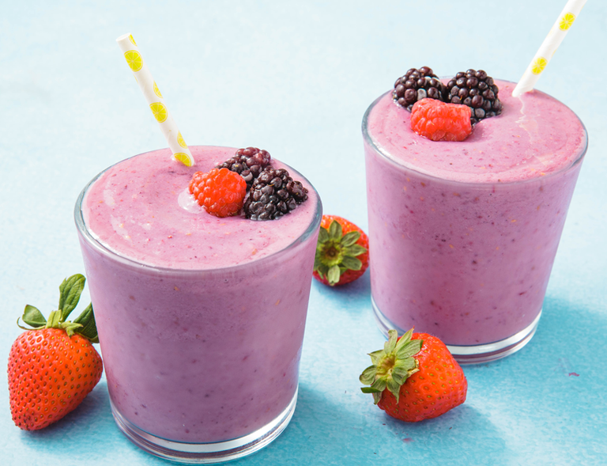

Smoothie de Morango

Smoothie delicioso de morango, perfeito para refrescar o dia.
Ingredientes:
- 1 xícara de morangos frescos ou congelados
- 1 banana madura
- 1/2 xícara de iogurte natural ou iogurte grego
- 1 colher de sopa de mel ou adoçante natural (opcional)
- 1/2 xícara de leite ou leite vegetal (amêndoas, aveia, etc.)
- Gelo a gosto
Modo de Preparo:
- Coloque os morangos, a banana, o iogurte, o mel (se desejar), o leite e o gelo no liquidificador.
- Bata tudo até ficar bem homogêneo.
- Se necessário, adicione mais leite para ajustar a consistência.
- Sirva imediatamente e aproveite essa bebida rica em nutrientes!